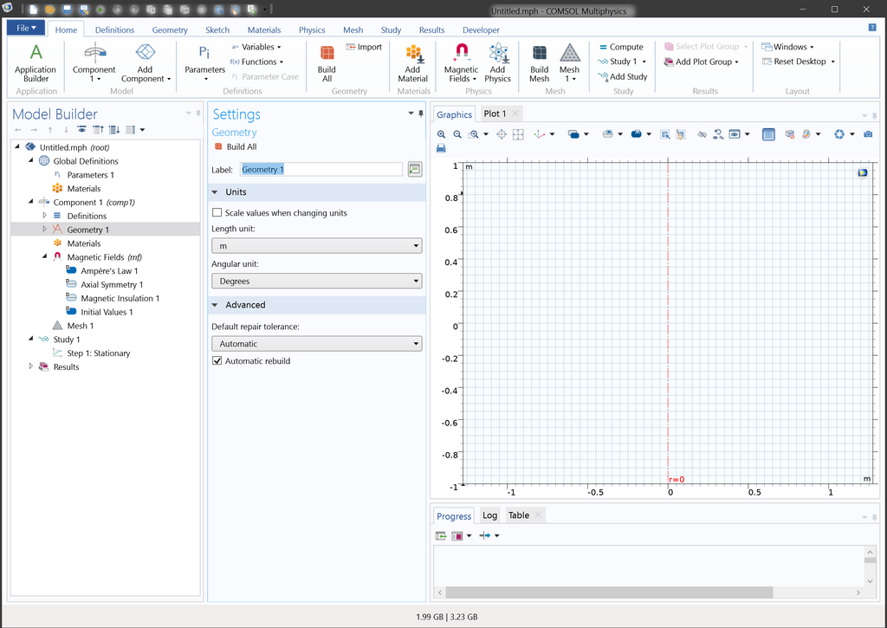

Getting started with COMSOL
Goals
Introducing elementary COMSOL functions with Helmholtz coils. - Building object: drawing coils and domain - Setting the simulation - Solve and analyze the data
Remarks
- If you just want to play with COMSOL to get familiar, go to
File→Application Librariesand check step-by-step documents. - If you are a person who need to read a book from the beginning, open COMSOL Documentation program that installed with COMSOL.
- If you prefer a video guide, see Youtube link for kind tutorials provided by COMSOL.
- Something written in
this formatis the words that you can find on your COMSOL window.
Introduction
Helmholtz coil
Picture of a commercial Helmholtz coils (picture from Bartington instrument).
In many laboratories, 3-pairs of Helmholtz coils are often used for canceling the Earth’s magnetic field. In physics laboratory, many experiments (such as atomic clocks or quantum computers) are magnetic field sensitive. It is also widely used in industries such as for calibrating the compass of the smartphone. COMSOL use Amphere’s law with the vector potential to calculate the magnetic field. \[ \nabla \times \left( \mu^{-1} \nabla \times \boldsymbol{A} \right) = \boldsymbol{J}_{e} \] \(\boldsymbol{A}\) is the vector potential, \(\boldsymbol{J}_e\) is the current density we apply, and \(\mu\) is the permeability of the material. Magnetic field is \(\boldsymbol{B} = \nabla\times\boldsymbol{A}\). We already learn how to calculate the axial magnetic field of a circular coil. We use Bio-Savart’s law to calculate the field, \[ d\boldsymbol{B} = \frac{\mu_0 I d\boldsymbol{l}\times\boldsymbol{r}}{4\pi r^3} \] The axial field, \(B_z\) can be calculated using symmetry of the coil. \[ B_z = \frac{\mu I}{2}\frac{R^2}{(R^2+z^2)^{3/2}} \] We can calculate the field from a pair of Helmholtz coil with some displacement in z direction. When the distance between the coils are the same as its radius, \(a\). The field at the center is \[ B_z = \left(\frac{4}{5}\right)^{3/2} \frac{\mu_0NI}{a} \]
Notice that this formula gives the field along the axis only and assumes infinitely thin wire. In addition, this formula is provided by an abstract or approximated situation. Using COMSOL we can calculate a bit realistic situation.
Workflow
(from a tutorial video) 1. Set up model environment 2. Create geometric object 3. Specify material properties 4. Define physics boundary conditions 5. Create the mesh 6. Run simulation 7. Post process the simulation
Simulating Helmholtz coil
Set up model environment
Create new file. Click Model wizard. Select Geometry: 2D axisymmetric. AC/DC → Electromagnetic fields →Magnetic fields (mf). Since the system under our interest has cylindrical symmetry, we choose 2D axisymmetric rather than 3D. Using symmetry is useful in many cases. Press study. General studies → stationary. We see the following interface where we work mostly.
 We see Model Builder pane and Settings pane and the other windows. Model Builder contains how we define the problem. The drop-down menus (Global Definition, Compnent, Geometry, .. ) are called node. Our simulation is consists of those nodes. Settings pane shows the properties of the selected node. If you right click on each node, you can find most of the actions you need to do. You can check and set values for the nodes in this pane. On the top, we have ribbon menu like MS Office, gives easy access to the nodes and its action on it.
Create geometric object
Let’s draw a pair of coil in Geometry node. r= 0 is the symmetry axis, we only draw two circles. Use Geometry ribbon on top of the menu or just right click Geometry 1 in the Model Builder. We also need a rectangle as the domain of the magnetic field. You can draw more interactively with Sketch ribbon or type numbers in Settings pane.
Specify material properties
Now we define how those things are made of using Materials. Material defines a physical properties of the object. Right click on Materials and click Add Material from library and we see Add Material pane. Since we are going to simulate copper ring hanging in the air, we add air and copper. We search the material called Air and double click to add it to the simulation. Add Copper too. We designate which Geometry is made of selected material. We assign copper to two circles and air to the rectangle using Geometric entity selection menu in Settings pane.
Define physics boundary conditions
Now, we move on to the Magnetic Fields (mf) in the Model Builder. We are going to define the current flowing through the ring. Right click on the node and select External Current Density. select two circles and give 1 \(A/m^2\) in \(\phi\) direction.
Create the mesh
Next, we set Mesh to solve the magnetic field. It is not possible to simulate the continuous domain, we slice the space into some small steps. There are rigorous mathematics behind this approximation, you can learn about this process in the future if you want. We select Extra fine element size and click Build All on top of the Settings pane.
Run simulation
The set up is finished and let’s solve the equation. Go to Study 1 node and click Compute in the Settings. You can see something is going on and get a nice plot on the Graphics window. COMSOL automatically plot something people might interest most, the magnitude of the magnetic field (or Magnetic flux density norm).
If you click Magnetic Flux Density Norm, Revolved Geometry (mf), than you see what COMSOL actually solve. Since we selected axisymmetric 2D, we see cylindrically symmetric ring.
Post process the simulation
How to present and analyze data is as important as solving the problem. Let’s say we are interested in the direction of the magnetic field also. We right click on the Magnetic Flux Denisrty Norm (mf) node and add Arrow Surface. Click Plot than you get red arrows that shows the direction and the magnitude. You can play with adjusting the number of grid points and colors and scaling in Settings pane.
The beauty of Helmholtz coil is the homogeneity of the field at the center with its simple geometry. We would like to check the uniformity using 1D cut plot along the axis. Right click on Results node and add 1D Plot Group. Add Line Graph on 1D Plot Group. Using this node, we can observe magnetic field strength along the symmetry axis. We set the selection in Settings pane to the axis, and check the data we want to plot y-Axis Data is the norm of the magnetic field (mf.normB). You can plot whatever you want by typing different Expression and you can find another expressions by expanding green and red arrow icon at the right corner.
After we set, we click Plot, than we get the field value along the axis. You can compare this value with your analytic calculations you learn in General Physics course. Since we did not precisely set the geometry to Helmholtz condition, the field is not that homogeneous.
Getting more details
To be more flexible in parameter tuning, we use Parameters 1 in Global Definitions node. We would like to tune the radius of the ring, \(r_1\) and the distance between two rings, \(d_1\). We can put \(r_1\) and \(d_1\) to different nodes to parametrize the simulation (the dimension should be the length in this case).
We put those to the location of the rings.
Update the geometry (Build All Objects), generate mesh again since you changed the geometry and compute the simulation again. You can observe more homogeneous field at the center.
We can play with the parameters, \(r_1\) and \(d_1\). We can test how the homogeneity changes by those parameters.
One can observe that the magnetic field is localized in the box we define (especially on the right edge of the box). This is because of the default boundary condition (magnetic insulation) set by the COMSOL. We basically simulate Helmholtz coil in a metal box made of high permeability (material that blocks the magnetic flux). We can extend the size of the box much larger than \(r_1\) and \(d_1\), in order to minimize the effect of this artificial boundary. One can check whether the line graph converges or not by gradually extending the domain size.
Homework
- Are we sure about this simulation? When we first try the simulation, we are not sure whether the simulation is right or not. In physics research field, people often call this kind of computer simulation as ‘experiment done in computer’. We need some process to test its reliability. One general method is comparing it with an analytic calculation. In this case we can compare the result with the formula from Bio-Savart’s law. Are they comparable? (Explain quantitatively)
- Recognizing the mesh. What is the effect size of the wire? How thin can wire be? What happen if the wire is too small? (Explain qualitatively)
- In the last part of the tutorial, we mentioned about high permeability material. How does the high permeability material block the field? Is there any real material like this? You may also learned about Faraday cage. How does it different from the Faraday cage? (Explain qualitatively)